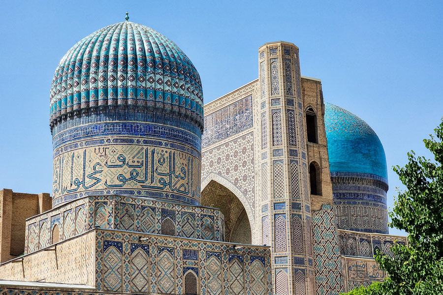
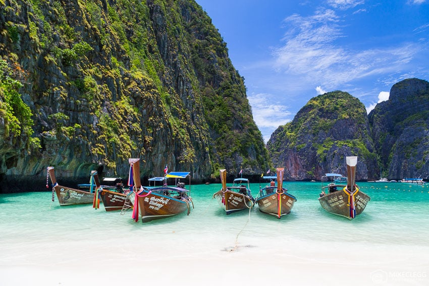

Catatan belajar: gunakan prinsip Distribusi, Interelasi, Deskripsi, Korologi; konsep Lokasi, Jarak, Pola, Interaksi, Skala, Difusi, Aglomerasi; dan pendekatan Wilayah, Ekologi, serta Kompleks Wilayah untuk menelaah tiap benua.
Asia
- Morfologi & Bentang Alam: Pegunungan Himalaya, plato Tibet, sabuk vulkanik Ring of Fire, delta besar (Ganges-Brahmaputra, Mekong). (Pendekatan ekologi)
- Persebaran Penduduk & Aktivitas: Konsentrasi di dataran rendah dan kota pesisir; megakota (Tokyo, Jakarta). Aglomerasi industri di Asia Timur & Tenggara. (Konsep aglomerasi, pola)
- Iklim: Monsun dominan Asia Selatan-Timur; arid di Asia Barat; kontinental di Asia Tengah. (Prinsip distribusi)
- Keterkaitan Geografi: Topografi memandu pola permukiman dan pertanian; monsun memicu musim tanam. (Interelasi; kompleks wilayah Asia)

Asia Tengah: stepa luas dan pegunungan Tian Shan–Pamir membentuk pola permukiman oase. (Deskripsi, interelasi)

Asia Tenggara kepulauan: gunung api dan pesisir padat memicu aglomerasi kota pelabuhan. (Aglomerasi, ekologi)
Afrika
- Morfologi & Bentang Alam: Dataran tinggi Afrika, Rift Valley, Sahara sebagai gurun terbesar, sungai Nil-Kongo-Niger. (Deskripsi, wilayah)
- Persebaran Penduduk & Aktivitas: Kepadatan tinggi di delta Nil, Teluk Guinea, pesisir timur; ekonomi berbasis komoditas & jasa perkotaan. (Distribusi, skala)
- Iklim: Gradien latitudinal dari ekuator (hutan hujan) ke sabana hingga gurun; pantai berpengaruh arus Benguela/Guinea. (Konsep lokasi & jarak)
- Keterkaitan Geografi: Difusi urbanisasi cepat, namun variasi kapasitas adaptasi iklim. (Difusi, interelasi)
Eropa
- Morfologi & Bentang Alam: Pegunungan Alpen, Skandinavia, dataran rendah Eropa, sungai Rhine-Danube. (Deskripsi)
- Persebaran Penduduk & Aktivitas: Urbanisasi matang; koridor megalopolis London–Randstad–Rhine–Ruhr–Milan. (Aglomerasi, pola)
- Iklim: Maritim sedang di barat karena Arus Atlantik Utara; kontinental meningkat ke timur. (Distribusi, lokasi relatif)
- Keterkaitan Geografi: Infrastruktur lintas-batas menyatukan pasar & mobilitas; kebijakan ruang UE. (Kompleks wilayah)
Amerika Utara
- Morfologi & Bentang Alam: Pegunungan Rocky–Sierra Nevada, Great Plains, Great Lakes, Mississippi. (Wilayah, deskripsi)
- Persebaran Penduduk & Aktivitas: Konsentrasi koridor BosWash & Cascadia; pertanian mekanis di Great Plains; sektor teknologi di Sun Belt. (Aglomerasi, skala)
- Iklim: Gradien utara–selatan yang kuat; badai salju di Canada, hurricane di Teluk Meksiko. (Distribusi)
- Keterkaitan Geografi: Interaksi iklim-ekonomi memengaruhi migrasi internal & pola energi. (Interelasi)
Amerika Selatan
- Morfologi & Bentang Alam: Andes, Amazon Basin, Pampas, Atacama. (Ekologi, wilayah)
- Persebaran Penduduk & Aktivitas: Pantai timur & andean cities; ekonomi komoditas, agroindustri, dan pariwisata. (Distribusi)
- Iklim: Hutan hujan ekuatorial hingga subtropis; pengaruh El Niño–La Niña kuat. (Interaksi manusia-lingkungan)
- Keterkaitan Geografi: Deforestasi dan jasa ekosistem memengaruhi skala lokal–global. (Skala, korologi)
Australia & Oseania
- Morfologi & Bentang Alam: Dataran kering interior Australia, Great Dividing Range, pulau-pulau Pasifik vulkanik–karang. (Deskripsi)
- Persebaran Penduduk & Aktivitas: Konsentrasi di pesisir tenggara–timur Australia; ekonomi jasa & sumber daya; ketahanan pulau kecil. (Pola, jarak)
- Iklim: Arid-interior, subtropis–temperate pesisir; siklon tropis Pasifik Selatan. (Distribusi)
- Keterkaitan Geografi: Kerentanan perubahan iklim di negara kepulauan mendorong adaptasi berbasis ekosistem. (Pendekatan ekologi)
Antarktika
- Morfologi & Bentang Alam: Lapisan es tebal, plateau terdingin, pegunungan tersembunyi; permafrost. (Deskripsi)
- Persebaran Penduduk & Aktivitas: Tidak permanen; stasiun riset musiman; regulasi Perjanjian Antarktika. (Skala global, wilayah khusus)
- Iklim: Polar ekstrim dengan angin katabatik; indikator perubahan iklim global. (Distribusi, interelasi)
- Keterkaitan Geografi: Dinamika es–laut memengaruhi permukaan laut global. (Korologi, interaksi)
Mengaitkan Prinsip
Gunakan Distribusi untuk memetakan penyebaran fenomena; Interelasi menelusuri sebab–akibat; Deskripsi merangkum ciri wilayah; Korologi menyintesis keunikan kawasan.
Pendekatan & Konsep
Padukan pendekatan wilayah (perbandingan antar-benua), ekologi (manusia–lingkungan), dan kompleks wilayah (keterpaduan). Terapkan konsep lokasi, jarak, pola, interaksi, skala, difusi, aglomerasi.